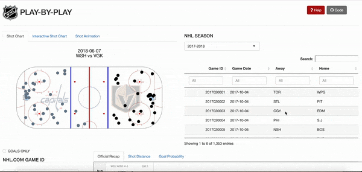
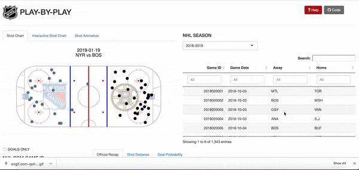

Introduction
As part of the 1st RStudio Shiny Contest, I created the NHL Play-by-Play App. Previously, I wrote about the makings of this app (Hacking the NHL Play-by-Play App in Shiny), but I realized that I should provide an example of how this app can be used to extract information. As a result, in this post, I will be showing insights from looking at a regular season game between the Montreal Canadiens and the Toronto Maple Leafs on October 3rd, 2018.
How to Search for Game ID

- Select Season from NHL Season dropdown menu
- Find Game ID from Table
- Enter Game ID in NHL.COM GAME ID
Shot Chart

Montreal Canadiens shot locations are displayed on the left half of the rink containing the Canadiens logo. Toronto Maple Leafs shot locations are displayed on the right half of the rink containing the Maple Leafs logo.
Looking at the region between the faceoff circle and the blue line, Toronto took significantly more shots on the left side (5 vs 1), signifying that Toronto’s attack was tilted to the left-side and perhaps, Toronto’s left defensemen were more involved in the offense than Toronto’s right defensemen.
The Canadiens took alot of shots around the net whereas Toronto’s shots are spread out. There is one Canadiens shot outside the blue line that we can explore further using the interactive shot chart below.
Interactive Shot Chart

Interactive Shot chart shows information that the static shot chart doesn’t contain: distance of shot from goal, name of the shooter, players who assisted the goal (if shot is a goal), number of goals/assists a player scored, type of shot, and goal probability (probability that the shot is a goal).
Large circles represent goals whereas small circles represent shots
Generally, shots taken closer to the net and toward the middle of the ice have higher goal probability. A good example of this is Armia’s shot; it is taken outside the blue line and has a 1.6% chance of going in the net. On the other hand, Lehkonen’s goal, 4 ft from the net, has a 14.5% goal probability.
Shot Animation

- A real-time representation of the Play-By-Play data that look at two event types, shots/goals. Since both event types are directed toward the net, the animation shows all points moving towards the net.
- In the near future with real-time rendering of
gganimateand the advent of NHL tracking data, I can create a more accurate animation of the puck and players, similar to my NBA animations
Shot Distance

Histogram of shot distances support what we learned from the shot chart: “Montreal took a lot of shots around the net whereas Toronto’s shots are spread out”
Histogram contains vertical lines for the goal line, faceoff dots, and blue line. This helps users visualize the placement of shots on the ice as another angle to the shot chart.
Goal Probability Animation

- It shows the ebbs and flows of the game very well since it visualizes the momentum swings of the game.
- Vertical lines represent end of periods 1,2,3
Game Recap

- Official NHL.com Recap
- Watch highlights, box score, and the summary of the game.